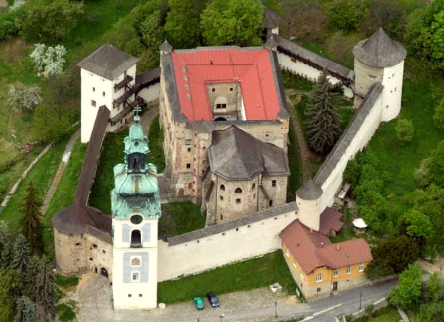

8. PONT – Vár ahonnan minden torony látszik
Az Óvár, vagyis a régi vár Selmecbánya egyik legősibb őrhelye. Első pillantásra inkább tűnik templomnak, mint klasszikus várnak – nem véletlenül: eredetileg Szűz Mária-plébániatemplomként épült a 13. században, a hegygerincen, ahonnan jól be lehetett látni a völgyben fekvő települést.

Később, amikor a környék bányavárosai egyre fontosabbá váltak, és egyre többször érkezett hír török támadásokról, a város úgy döntött, hogy a templom köré erődítményt épít. Falak, bástyák, kaputorony és lőrések születtek – a templom lassan várrá nőtte ki magát. Az Óvár így lett egyszerre a hit és a védelem helye: kőbe zárt krónikája Selmecbánya évszázadainak.

Ma már az erődben kiállítások, régi fegyverek, óraszerkezetek, kínzókamra és a bányaváros múltját bemutató tárlatok várják a látogatókat. A vastag falak, a régi börtöncellák és a kilátást adó tornyok mind arról mesélnek, hogy ez a hely egyszerre volt menedék, börtön és figyelőpont – egy igazi „kőből faragott időutazás”.

Hol álljatok meg?
Az Óvárhoz felérve menjetek egészen a vár kapujáig, de ne lépjetek még be. A kapuval szembefordulva, a tér felé nézve álljatok meg az első kandellábernél (az első lámpaoszlopnál).
Innen, ha a városra néztek, egy különleges panoráma tárul elétek: egy sor tornyos épület, amelyek közül négy igazán szépen kirajzolódik egymás mögött.
Tornyok, mint rejtett betűk
A feladatotok az, hogy nyugatról kelet felé figyeljétek meg a látképet, és sorban azonosítsátok a legjellegzetesebb tornyos épületeket. A tornyokhoz tartozó épületek kezdőbetűi adják a kódsor alapját:
K – Kopogtató ház (Klopaczka, a régi bányász-ébredőtorony)
U – Újvár (a másik hegyen álló őrtorony
V – Városháza tornya
S – Szent Katalin templom tornya
K – Kálvária a domb tetején
Ha jól nézitek a panorámát, ezek a tornyok kirajzolják az útvonalat a bányaváros lelke fölött. A kezdőbetűkből egy betűsort kaptok, amely így néz ki:
K – U – V – S – K
A feladvány: mit őriznek a hegyek?
Selmecbánya környékén régen nem csak bányászok és diákok jártak: a felvidéki hegyek juhnyájait is őrizni kellett. A helyiek szerint az ősi magyar fehér pásztorkutyák épp olyan elszántan vigyázták a nyájat, mint ahogy a várőrök figyelték a völgyet.
A betűsorotok tehát: K U V S K. Ha egy kicsit tovább gondolkodtok, és „megszánjátok” ezt az öt betűt néhány magánhangzóval, egy híres magyar pásztorkutya neve rajzolódik ki belőlük. Ez a kutyafajta őrizte egykor a felvidéki hegyek juhait – és most a ti következő kincsetek jelszavát is őrzi.
A 9. pont, a „Luther rózsája” kapuját
ennek a magyar fehér pásztorkutyának a neve nyitja.